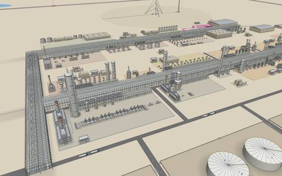
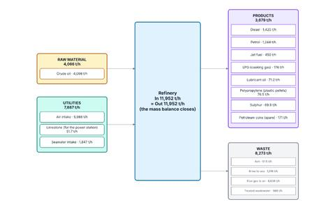
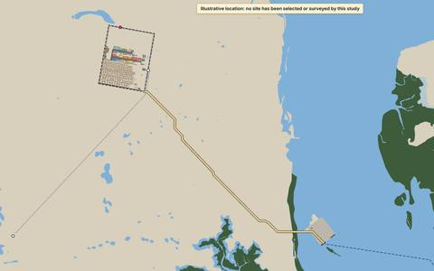

Independent; not affiliated with Dangote Group; illustrative, not a design for construction.
This site shows one way a large oil refinery near Lamu, on Kenya's coast, could be laid out and run. It is an independent study. It uses public information and standard engineering rules of thumb.
It shows the main process units, how oil moves between them and how much, and an indicative place on the map. This is an early concept, not a finished design, so the figures carry a "how sure" label: on the figure itself, or once for the page or table it sits in. Drawn sizes and distances are illustrative.

See it in 3DTurn it, zoom in, search for a unit, and select any part to see what it does.
Detailed block diagramCrude oil and utilities in, products and waste out, with the full mass balance.
On the mapA map of the Lamu area, with the plant's link to the port.Best seen on a computer screen. On a phone, turn it sideways for the 3D model and the block diagram.
How the crude oil becomes products, in the order the video shows it. Select a block to read what it does; select it again to close it. Select the crude to light up its path to the products.
A simple picture of the main steps. The detailed block diagram has every unit and the full mass balance.